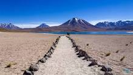

Trabalho de Geografia - Relevo da América Latina
No norte do Chile, encontra-se o Deserto de Atacama, muitas vezes considerado o deserto mais seco do mundo. O relevo nessa área inclui planícies áridas, dunas de areia e montanhas rochosas.
[ ! ] O Atacama é um deserto localizado na região norte do Chile, na América do Sul, sendo popularmente conhecido como o deserto mais seco da Terra e também o local cuja paisagem mais se assemelha à superfície de Marte.
_____